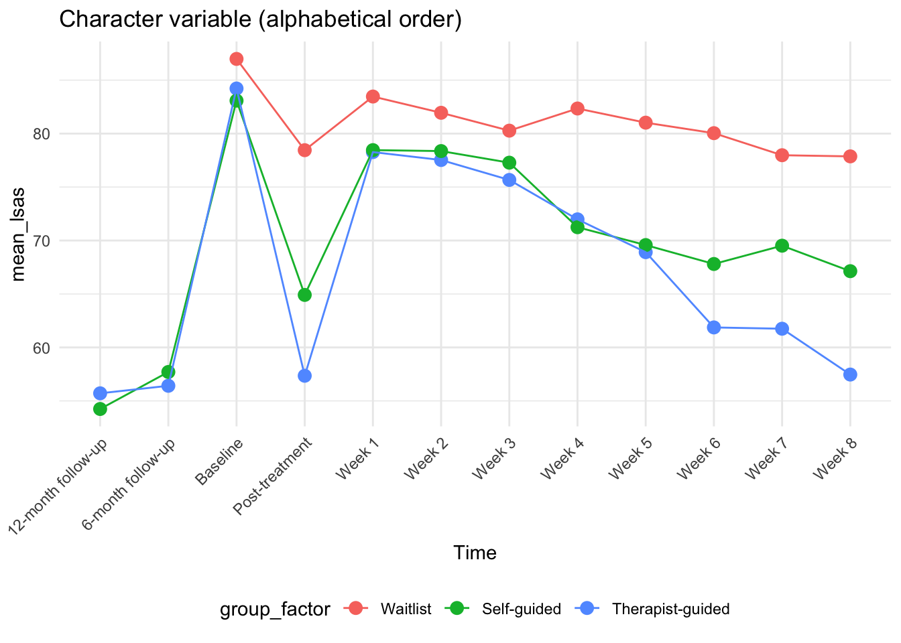
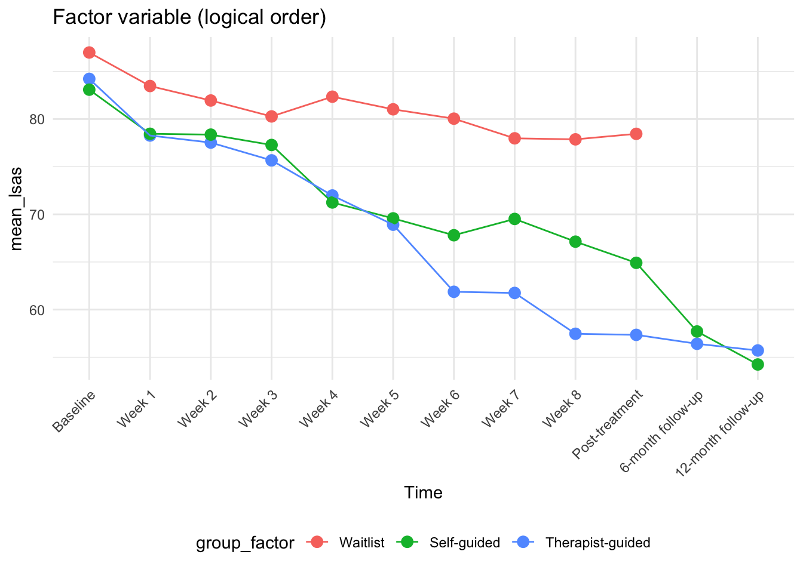
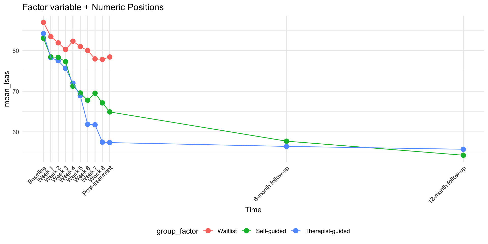

library(tidyverse)
library(here)Tidy Data Manipulation
In this lab, we will learn how to manipulate and reshape data using the tidyverse suite of packages. Data manipulation is a crucial skill in biostatistics because raw data is rarely in the format we need for analysis or visualization.
For this lab, we will continue working with the STePS dataset that we cleaned in Import and clean data and explored in Descriptive statistics. By the end of this lab, you will be able to:
- Filter rows and select columns based on specific criteria
- Create new variables using existing data
- Group data and calculate summary statistics
- Reshape data between wide and long formats
- Understand when to use each data manipulation technique
Why data manipulation matters
We often need to:
- Calculate change scores from baseline to follow-up
- Create treatment group comparisons
- Reshape data for different types of analyses
- Combine data from multiple sources
Data wrangling can often be the most time-consuming part of a project, so it’s important to be efficient and avoid errors.
Load packages and data
We’ll use the same packages as before.
Let’s load our cleaned data from the Import and clean data lab:
df_data <- read_csv(here("data", "steps_clean.csv"))
# Quick check of our data
glimpse(df_data)Rows: 181
Columns: 38
$ id <dbl> 1, 2, 3, 4, 5, 6, 7, 8, 9, 10, 11, 12, 13, 14, 15, 16, …
$ group <dbl> 2, 1, 0, 2, 2, 2, 2, 2, 1, 1, 1, 1, 0, 2, 1, 1, 2, 0, 1…
$ lsas_screen <dbl> 63, 71, 98, 63, 74, 81, 67, 76, 88, 73, 86, 78, 97, 72,…
$ gad_screen <dbl> 7, 17, 18, 8, 14, 11, 5, 8, 14, 5, 15, 16, 17, 13, 10, …
$ phq9_screen <dbl> 6, 13, 19, 4, 18, 8, 9, 8, 14, 3, 5, 11, 12, 18, 10, 4,…
$ bbq_screen <dbl> 60, 66, 4, 50, 22, 23, 47, 52, 31, 46, 67, 24, 57, 40, …
$ scs_screen <dbl> 25, 16, 22, 35, 29, 30, 20, 34, 21, 26, 35, 21, 32, 33,…
$ dmrsodf_screen <dbl> 49178, 50727, 45074, 5381, 48444, 50899, 46923, 41428, …
$ ders_screen <dbl> 44, 73, 65, 45, 46, 49, 57, 38, 67, 45, 55, 56, 71, 36,…
$ pid_5_screen <dbl> 25, 20, 48, 17, 24, 20, 24, 26, 39, 23, 24, 26, 23, 15,…
$ lsas_v1 <dbl> 72, NA, 81, 44, 39, 65, 68, 69, NA, 70, 92, 83, 102, 50…
$ lsas_v2 <dbl> 64, NA, 89, 33, 115, 64, NA, 70, 97, 83, 94, NA, 74, 62…
$ lsas_v3 <dbl> 72, NA, 73, 36, NA, 63, NA, 71, 92, 62, 103, NA, 85, 54…
$ lsas_v4 <dbl> 61, NA, 94, 44, NA, 60, NA, 51, 85, 61, 99, NA, 84, 52,…
$ lsas_v5 <dbl> 61, NA, 93, 21, NA, 55, NA, 55, NA, 65, 82, NA, 79, 51,…
$ lsas_v6 <dbl> 46, NA, 88, 20, NA, 46, NA, 56, 93, NA, 79, NA, 77, 44,…
$ lsas_v7 <dbl> 55, NA, NA, 18, NA, 45, NA, 64, NA, 54, 101, NA, 89, 43…
$ lsas_v8 <dbl> 49, NA, NA, 17, NA, 44, NA, 52, NA, 61, 84, NA, 89, NA,…
$ lsas_post <dbl> 50, NA, 77, 22, NA, 52, 75, 45, 79, 64, 80, 89, 83, 45,…
$ gad_post <dbl> 4, NA, 19, 6, NA, 9, 4, 3, 10, 7, 15, 7, 11, 11, 11, 1,…
$ phq9_post <dbl> 3, NA, 22, 4, NA, 6, 11, 2, 14, 4, 8, 7, 8, 8, 13, 4, 1…
$ bbq_post <dbl> 76, NA, 68, 57, NA, 14, 46, 70, 36, 40, 73, 31, 75, 41,…
$ scs_post <dbl> 34, NA, 34, 34, NA, 30, 19, 34, 23, 23, 31, 37, 34, 34,…
$ dmrsodf_post <dbl> 50776, NA, 42809, 52069, NA, 51758, 49, 50235, 47978, 4…
$ ders_post <dbl> 36, NA, 78, 38, NA, 54, 61, 26, 56, 51, 52, 25, 37, 33,…
$ lsas_fu6 <dbl> 33, NA, NA, 14, 6, 60, 64, 49, NA, 45, 85, 74, NA, 58, …
$ gad_fu6 <dbl> 0, NA, NA, 0, NA, 14, 6, 4, NA, 5, 16, NA, NA, 11, 8, 8…
$ phq9_fu6 <dbl> 3, NA, NA, 2, NA, 6, 8, 3, NA, 6, 22, NA, NA, 6, 5, 12,…
$ bbq_fu6 <dbl> 77, NA, NA, 68, NA, 9, 56, 64, NA, 48, 36, NA, NA, 39, …
$ scs_fu6 <dbl> 28, NA, NA, 41, NA, 24, 29, 33, NA, 25, 30, NA, NA, 30,…
$ ders_fu6 <dbl> 35, NA, NA, 36, NA, 72, 61, 26, NA, 37, 67, NA, NA, 36,…
$ lsas_fu12 <dbl> 27, NA, NA, 16, 39, 75, 66, 43, NA, 51, 79, NA, NA, 55,…
$ gad_fu12 <dbl> 5, NA, NA, 0, 11, 7, 6, 4, NA, 4, 14, NA, NA, 8, 19, 12…
$ phq9_fu12 <dbl> 5, NA, NA, 2, 19, 9, 14, 3, NA, 5, 15, NA, NA, 8, 18, 3…
$ bbq_fu12 <dbl> 76, NA, NA, 62, 12, 22, 52, 54, NA, 47, 25, NA, NA, 33,…
$ scs_fu12 <dbl> 38, NA, NA, 40, 28, 33, 26, 34, NA, 21, 30, NA, NA, 32,…
$ ders_fu12 <dbl> 35, NA, NA, 32, 46, 65, 42, 27, NA, 53, 52, NA, NA, 36,…
$ trt <chr> "therapist-guided", "self-guided", "waitlist", "therapi…Basic data operations
Before we dive into complex data cleaning, let’s start with the fundamental operations of data manipulation.
Selecting columns with select()
The select() function allows us to choose which columns (variables) we want to keep in our dataset. This is useful when working with large datasets where you only need a few variables.
# Select just ID, group, and baseline LSAS
df_basic <- df_data |>
select(id, group, lsas_screen)
head(df_basic)# A tibble: 6 × 3
id group lsas_screen
<dbl> <dbl> <dbl>
1 1 2 63
2 2 1 71
3 3 0 98
4 4 2 63
5 5 2 74
6 6 2 81We can also use helper functions to select multiple columns at once:
# Select all columns that start with "lsas"
df_lsas_all <- df_data |>
select(id, group, starts_with("lsas"))
# Check how many columns we have
ncol(df_lsas_all)[1] 14names(df_lsas_all) [1] "id" "group" "lsas_screen" "lsas_v1" "lsas_v2"
[6] "lsas_v3" "lsas_v4" "lsas_v5" "lsas_v6" "lsas_v7"
[11] "lsas_v8" "lsas_post" "lsas_fu6" "lsas_fu12"
Exercise 3.1: Practice selecting columns
Select only the ID, group, and all PHQ-9 variables (columns starting with “phq9”) from the dataset. How many columns does your new dataset have?
Filtering rows with filter()
The filter() function allows us to select specific rows based on conditions. This is useful for creating subgroups or excluding certain participants.
# Keep only participants in the guided treatment group (group == 2)
df_guided <- df_data |>
filter(group == 2)
nrow(df_guided)[1] 60We can use multiple conditions:
# Keep participants in guided treatment with baseline LSAS >= 60
df_guided_severe <- df_data |>
filter(group == 2, lsas_screen >= 60)
nrow(df_guided_severe)[1] 60
Common filter conditions
==: equal to!=: not equal to
>,>=: greater than (or equal)<,<=: less than (or equal)%in%: is in a list of valuesis.na(): is missing!is.na(): is not missing
Exercise 3.2: Practice filtering data
- Filter the data to include only participants with baseline LSAS scores between 50 and 80.
- Filter to include only participants in groups 1 or 2 (exclude waitlist).
- How many participants meet both criteria?
Arranging rows with arrange()
The arrange() function sorts your data by one or more variables. This can be helpful for identifying extreme values or organizing data for presentation.
# Sort by baseline LSAS score (lowest to highest)
df_sorted <- df_data |>
select(id, group, lsas_screen) |>
arrange(lsas_screen)
head(df_sorted)# A tibble: 6 × 3
id group lsas_screen
<dbl> <dbl> <dbl>
1 65 2 60
2 124 1 60
3 140 0 60
4 146 0 60
5 157 0 60
6 58 0 61Use desc() for descending order:
# Sort by baseline LSAS score (highest to lowest)
df_sorted_desc <- df_data |>
select(id, group, lsas_screen) |>
arrange(desc(lsas_screen))
head(df_sorted_desc)# A tibble: 6 × 3
id group lsas_screen
<dbl> <dbl> <dbl>
1 123 0 134
2 23 0 131
3 35 0 131
4 53 0 128
5 170 2 128
6 55 2 125Creating new variables with mutate()
The mutate() function allows us to create new variables or modify existing ones. This is often used for creating derived variables, such as change scores or standardized scores.
Basic calculations
df_with_change <- df_data |>
select(id, group, lsas_screen, lsas_post) |>
mutate(
# Calculate change score (post - baseline)
lsas_change = lsas_post - lsas_screen,
# Calculate percentage change
lsas_pct_change = (lsas_change / lsas_screen) * 100
)
head(df_with_change)# A tibble: 6 × 6
id group lsas_screen lsas_post lsas_change lsas_pct_change
<dbl> <dbl> <dbl> <dbl> <dbl> <dbl>
1 1 2 63 50 -13 -20.6
2 2 1 71 NA NA NA
3 3 0 98 77 -21 -21.4
4 4 2 63 22 -41 -65.1
5 5 2 74 NA NA NA
6 6 2 81 52 -29 -35.8Creating categorical variables
We often need to create categorical versions of continuous variables:
df_with_categories <- df_data |>
select(id, group, phq9_screen, gad_screen) |>
mutate(
# Using case_when() for PHQ9 severity categories
phq9_severity = case_when(
phq9_screen < 5 ~ "Minimal",
phq9_screen < 10 ~ "Mild",
phq9_screen < 15 ~ "Moderate",
phq9_screen < 20 ~ "Moderately severe",
phq9_screen >= 20 ~ "Severe",
is.na(phq9_screen) ~ "Missing"
),
# Convert to factor
phq9_severity = factor(
phq9_severity,
levels = c(
"Minimal",
"Mild",
"Moderate",
"Moderately severe",
"Severe",
"Missing"
),
ordered = TRUE
),
# Create binary variable for high anxiety
high_anxiety = factor(
ifelse(gad_screen >= 10, "High", "Low"),
levels = c("Low", "High")
),
# Create more readable group labels
group_label = factor(group,
levels = c(0, 1, 2),
labels = c("Waitlist", "Self-guided", "Therapist-guided")
)
)
# Check our new variables
table(df_with_categories$phq9_severity)
Minimal Mild Moderate Moderately severe
19 80 52 30
Severe Missing
0 0 table(df_with_categories$group_label)
Waitlist Self-guided Therapist-guided
60 61 60 We can check how our created PHQ9 categories map to the raw scores:
df_with_categories |>
select(phq9_screen, phq9_severity) |>
distinct(phq9_screen, phq9_severity) |>
arrange(phq9_screen)# A tibble: 19 × 2
phq9_screen phq9_severity
<dbl> <ord>
1 1 Minimal
2 2 Minimal
3 3 Minimal
4 4 Minimal
5 5 Mild
6 6 Mild
7 7 Mild
8 8 Mild
9 9 Mild
10 10 Moderate
11 11 Moderate
12 12 Moderate
13 13 Moderate
14 14 Moderate
15 15 Moderately severe
16 16 Moderately severe
17 17 Moderately severe
18 18 Moderately severe
19 19 Moderately severe
Exercise 3.3: Create new variables
- Create a new variable called
gad_severitythat categorizes GAD-7 scores as:- “Minimal” (0-4)
- “Mild” (5-9)
- “Moderate” (10-14)
- “Severe” (15+)
- Create a binary variable indicating whether someone has both high anxiety (GAD-7 ≥ 10) AND moderate-to-severe depression (PHQ-9 ≥ 10).
Summarizing data with group_by() and summarize()
A very common task is grouping data and calculating summary statistics.
Basic summarization
We can use the summarize() (from dplyr) function to calculate summary statistics for our data.
# Calculate overall statistics
df_data |>
summarize(
n_participants = n(),
mean_lsas = mean(lsas_screen, na.rm = TRUE),
sd_lsas = sd(lsas_screen, na.rm = TRUE),
median_lsas = median(lsas_screen, na.rm = TRUE)
)# A tibble: 1 × 4
n_participants mean_lsas sd_lsas median_lsas
<int> <dbl> <dbl> <dbl>
1 181 84.8 16.5 82Grouped summarization
More often, we want to calculate statistics by groups:
# Calculate statistics by treatment group
group_stats <- df_data |>
group_by(group) |>
summarize(
n_participants = n(),
mean_lsas = mean(lsas_screen, na.rm = TRUE),
sd_lsas = sd(lsas_screen, na.rm = TRUE),
median_lsas = median(lsas_screen, na.rm = TRUE),
.groups = "drop" # This removes the grouping
)
group_stats# A tibble: 3 × 5
group n_participants mean_lsas sd_lsas median_lsas
<dbl> <int> <dbl> <dbl> <dbl>
1 0 60 87.0 19.0 83
2 1 61 83.1 13.0 82
3 2 60 84.2 17.0 81We can also use the .by syntax which is often cleaner:
df_data |>
summarize(
n_participants = n(),
mean_lsas = mean(lsas_screen, na.rm = TRUE),
sd_lsas = sd(lsas_screen, na.rm = TRUE),
.by = group
)# A tibble: 3 × 4
group n_participants mean_lsas sd_lsas
<dbl> <int> <dbl> <dbl>
1 2 60 84.2 17.0
2 1 61 83.1 13.0
3 0 60 87.0 19.0
Exercise 3.4: Practice summarizing data
- Calculate the mean and standard deviation of GAD-7 scores by treatment group.
- Calculate the number of participants and percentage with high anxiety (GAD-7 ≥ 10) by treatment group.
Reshaping data: Wide vs. Long format
Understanding data shapes is crucial for analysis and visualization. Let’s explore the difference between wide and long format data.
Understanding wide vs. long format
Our data is currently in wide format, where each participant has one row, with repeated measures in separate columns.
- Wide format: Each participant has one row, with repeated measures in separate columns
- Long format: Each measurement has its own row, with a column indicating the time point
When to use each format
- Wide format: Calculating change scores, some statistical tests (e.g., SEM), demographic tables
- Long format: Plotting over time, mixed-effects models, most
ggplotvisualizations
Converting to long format with pivot_longer()
Let’s focus on the LSAS measurements across time. First, let’s see what LSAS columns we have:
# Check what LSAS columns we have
df_data |>
select(starts_with("lsas")) |>
names() [1] "lsas_screen" "lsas_v1" "lsas_v2" "lsas_v3" "lsas_v4"
[6] "lsas_v5" "lsas_v6" "lsas_v7" "lsas_v8" "lsas_post"
[11] "lsas_fu6" "lsas_fu12" All of the columns that start with “lsas” are LSAS scores at different time points. Now let’s convert to long format:
df_lsas_long <- df_data |>
select(id, group, starts_with("lsas")) |>
pivot_longer(
cols = starts_with("lsas"), # Which columns to pivot
names_to = "time_point", # Name for the new column with time info
values_to = "lsas_score" # Name for the new column with values
)
head(df_lsas_long, 12)# A tibble: 12 × 4
id group time_point lsas_score
<dbl> <dbl> <chr> <dbl>
1 1 2 lsas_screen 63
2 1 2 lsas_v1 72
3 1 2 lsas_v2 64
4 1 2 lsas_v3 72
5 1 2 lsas_v4 61
6 1 2 lsas_v5 61
7 1 2 lsas_v6 46
8 1 2 lsas_v7 55
9 1 2 lsas_v8 49
10 1 2 lsas_post 50
11 1 2 lsas_fu6 33
12 1 2 lsas_fu12 27Cleaning the time variable
The time variable is not very readable. Let’s clean it up and create properly ordered factors:
df_lsas_long <- df_lsas_long |>
# Split the time_point column to separate "lsas" from the actual time
separate(time_point, into = c("measure", "time"), sep = "_") |>
# Create a cleaner time variable
mutate(
time_clean = case_when(
time == "screen" ~ "Baseline",
time == "v1" ~ "Week 1",
time == "v2" ~ "Week 2",
time == "v3" ~ "Week 3",
time == "v4" ~ "Week 4",
time == "v5" ~ "Week 5",
time == "v6" ~ "Week 6",
time == "v7" ~ "Week 7",
time == "v8" ~ "Week 8",
time == "post" ~ "Post-treatment",
time == "fu6" ~ "6-month follow-up",
time == "fu12" ~ "12-month follow-up"
),
# Also create a numeric week variable for plotting
week_num = case_when(
time == "screen" ~ 0,
time == "v1" ~ 1,
time == "v2" ~ 2,
time == "v3" ~ 3,
time == "v4" ~ 4,
time == "v5" ~ 5,
time == "v6" ~ 6,
time == "v7" ~ 7,
time == "v8" ~ 8,
time == "post" ~ 9,
time == "fu6" ~ 33, # 9 + 6*4 weeks
time == "fu12" ~ 57 # 9 + 12*4 weeks
),
) |>
# Remove the "measure" column since it's just "lsas" for all rows
select(-measure)
head(df_lsas_long)# A tibble: 6 × 6
id group time lsas_score time_clean week_num
<dbl> <dbl> <chr> <dbl> <chr> <dbl>
1 1 2 screen 63 Baseline 0
2 1 2 v1 72 Week 1 1
3 1 2 v2 64 Week 2 2
4 1 2 v3 72 Week 3 3
5 1 2 v4 61 Week 4 4
6 1 2 v5 61 Week 5 5Working with factors
You might notice that when we try to sort or plot this data, the time points don’t appear in chronological order. This is because R treats them as character strings and sorts them alphabetically. We need to convert them to factors with a specific order.
What are factors?
Factors are R’s way of handling categorical data with a specific order or set of allowed values. They’re especially important in data analysis to:
- Ensuring consistent category names (no typos)
- Controlling the order of categories in tables and plots
- Proper statistical analysis of categorical variables
Let’s see the problem first:
# Check the current order
unique(df_lsas_long$time_clean) [1] "Baseline" "Week 1" "Week 2"
[4] "Week 3" "Week 4" "Week 5"
[7] "Week 6" "Week 7" "Week 8"
[10] "Post-treatment" "6-month follow-up" "12-month follow-up"# See what happens when we sort
sort(unique(df_lsas_long$time_clean)) [1] "12-month follow-up" "6-month follow-up" "Baseline"
[4] "Post-treatment" "Week 1" "Week 2"
[7] "Week 3" "Week 4" "Week 5"
[10] "Week 6" "Week 7" "Week 8" Now let’s fix this by creating a properly ordered factor:
library(forcats) # Part of tidyverse, for working with factors
df_lsas_long <- df_lsas_long |>
mutate(
# Create a factor for time points with proper ordering
time_factor = factor(
time_clean,
levels = c(
"Baseline", "Week 1", "Week 2", "Week 3", "Week 4",
"Week 5", "Week 6", "Week 7", "Week 8",
"Post-treatment", "6-month follow-up", "12-month follow-up"
)
),
# Create a factor for treatment groups with meaningful labels
group_factor = factor(
group,
levels = c(0, 1, 2),
labels = c("Waitlist", "Self-guided", "Therapist-guided")
)
)
# Check our factors
levels(df_lsas_long$time_factor) [1] "Baseline" "Week 1" "Week 2"
[4] "Week 3" "Week 4" "Week 5"
[7] "Week 6" "Week 7" "Week 8"
[10] "Post-treatment" "6-month follow-up" "12-month follow-up"levels(df_lsas_long$group_factor)[1] "Waitlist" "Self-guided" "Therapist-guided"Let’s see how factors help by comparing how character vs factor variables are ordered:
# First, let's see the unique values in each format
unique(df_lsas_long$time_clean) |> sort() [1] "12-month follow-up" "6-month follow-up" "Baseline"
[4] "Post-treatment" "Week 1" "Week 2"
[7] "Week 3" "Week 4" "Week 5"
[10] "Week 6" "Week 7" "Week 8" levels(df_lsas_long$time_factor) [1] "Baseline" "Week 1" "Week 2"
[4] "Week 3" "Week 4" "Week 5"
[7] "Week 6" "Week 7" "Week 8"
[10] "Post-treatment" "6-month follow-up" "12-month follow-up"# Compare what happens when we arrange/sort the data
df_lsas_long |>
select(time_clean, time_factor) |>
arrange(time_clean) |>
distinct(time_clean, time_factor) |>
head(8)# A tibble: 8 × 2
time_clean time_factor
<chr> <fct>
1 12-month follow-up 12-month follow-up
2 6-month follow-up 6-month follow-up
3 Baseline Baseline
4 Post-treatment Post-treatment
5 Week 1 Week 1
6 Week 2 Week 2
7 Week 3 Week 3
8 Week 4 Week 4 df_lsas_long |>
select(time_clean, time_factor) |>
arrange(time_factor) |>
distinct(time_clean, time_factor) |>
head(8)# A tibble: 8 × 2
time_clean time_factor
<chr> <fct>
1 Baseline Baseline
2 Week 1 Week 1
3 Week 2 Week 2
4 Week 3 Week 3
5 Week 4 Week 4
6 Week 5 Week 5
7 Week 6 Week 6
8 Week 7 Week 7 Notice the difference:
- The character variable sorts alphabetically: “12-month follow-up” comes before “6-month follow-up”
- The factor variable sorts logically: Baseline → Week 1 → Week 2 → … → Post-treatment → Follow-ups
This is why factors are essential for any categorical variable where order matters!
Useful factor functions from forcats
fct_relevel(): Change the order of factor levelsfct_reorder(): Reorder factor levels by another variablefct_recode(): Change factor level namesfct_collapse(): Combine factor levelsfct_lump(): Collapse least common levels into “Other”
Using factors in summaries
Now our factors will behave properly in summaries and plots:
# Summary by time point (now in correct order!)
time_summary <- df_lsas_long |>
summarize(
n_obs = sum(!is.na(lsas_score)),
mean_lsas = mean(lsas_score, na.rm = TRUE),
.by = time_factor
)
time_summary# A tibble: 12 × 3
time_factor n_obs mean_lsas
<fct> <int> <dbl>
1 Baseline 181 84.8
2 Week 1 172 80.1
3 Week 2 158 79.3
4 Week 3 142 77.8
5 Week 4 142 75.6
6 Week 5 124 73.6
7 Week 6 132 70.2
8 Week 7 123 69.5
9 Week 8 119 67.8
10 Post-treatment 169 67.1
11 6-month follow-up 104 57.0
12 12-month follow-up 101 55
Exercise 3.4b: Practice with factors
- Create a factor for LSAS severity levels with the order: “Mild”, “Moderate”, “Severe”
- Create a factor for depression categories using PHQ-9 scores with proper ordering
- Use
fct_recode()to change “Self-guided” to “Self-guided CBT” in the group factor - Check that your factors appear in the correct order when you create a summary table
Why factors matter for visualization
Factors ensure that our plots display categories in the correct order:
# Compare plots with and without proper factor ordering
library(ggplot2)
# Create sample data for demonstration
plot_data <- df_lsas_long |>
summarize(
mean_lsas = mean(lsas_score, na.rm = TRUE),
.by = c(time_clean, time_factor, week_num, group_factor)
)
# Plot with character variable (wrong order)
p1 <- ggplot(plot_data, aes(x = time_clean, y = mean_lsas, color = group_factor)) +
geom_point(size = 3) +
geom_line(aes(group = group_factor)) +
labs(title = "Character variable (alphabetical order)", x = "Time") +
theme_minimal() +
theme(
legend.position = "bottom",
axis.text.x = element_text(angle = 45, hjust = 1)
)
# Plot with factor variable (correct order)
p2 <- ggplot(plot_data, aes(x = time_factor, y = mean_lsas, color = group_factor)) +
geom_point(size = 3) +
geom_line(aes(group = group_factor)) +
labs(title = "Factor variable (logical order)", x = "Time") +
theme_minimal() +
theme(
legend.position = "bottom",
axis.text.x = element_text(angle = 45, hjust = 1)
)
# Display both plots
p1
p2
ggplot(
plot_data,
aes(
x = week_num,
y = mean_lsas,
color = group_factor
)
) +
geom_point(size = 3) +
geom_line(aes(group = group_factor)) +
scale_x_continuous(
breaks = plot_data$week_num, # Use numeric positions
labels = plot_data$time_clean # Use readable labels
) +
labs(title = "Factor variable + Numeric Positions", x = "Time") +
theme_minimal() +
theme(
legend.position = "bottom",
panel.grid.minor.x = element_blank(),
axis.text.x = element_text(angle = 45, hjust = 1)
)
Key points about factors
- Always use factors for categorical variables that will be used in analysis or plotting
- Set the levels in logical order (not alphabetical)
- Use meaningful labels instead of numeric codes
- Factors control the order in tables, plots, and statistical output
- The
forcatspackage provides helpful functions for factor manipulation
Summarizing longitudinal data
Now that we have our data in long format, we can easily calculate means by group and time:
lsas_summary <- df_lsas_long |>
summarize(
n_obs = sum(!is.na(lsas_score)),
mean_lsas = mean(lsas_score, na.rm = TRUE),
sd_lsas = sd(lsas_score, na.rm = TRUE),
.by = c(group_factor, time_factor)
)
lsas_summary# A tibble: 36 × 5
group_factor time_factor n_obs mean_lsas sd_lsas
<fct> <fct> <int> <dbl> <dbl>
1 Therapist-guided Baseline 60 84.2 17.0
2 Therapist-guided Week 1 59 78.3 19.2
3 Therapist-guided Week 2 51 77.5 20.8
4 Therapist-guided Week 3 48 75.7 21.1
5 Therapist-guided Week 4 49 72.0 19.1
6 Therapist-guided Week 5 45 68.9 23.6
7 Therapist-guided Week 6 47 61.9 20.9
8 Therapist-guided Week 7 48 61.8 23.9
9 Therapist-guided Week 8 43 57.5 21.8
10 Therapist-guided Post-treatment 54 57.4 23.2
# ℹ 26 more rowsConverting back to wide format with pivot_wider()
Sometimes we need to convert back to wide format, for example to create a table with means by group and time:
# Create a wide format table with groups as columns (just means)
lsas_wide_simple <- lsas_summary |>
select(time_factor, group_factor, mean_lsas) |>
pivot_wider(
names_from = group_factor,
values_from = mean_lsas,
names_prefix = "mean_"
)
lsas_wide_simple# A tibble: 12 × 4
time_factor `mean_Therapist-guided` `mean_Self-guided` mean_Waitlist
<fct> <dbl> <dbl> <dbl>
1 Baseline 84.2 83.1 87.0
2 Week 1 78.3 78.5 83.5
3 Week 2 77.5 78.4 81.9
4 Week 3 75.7 77.3 80.3
5 Week 4 72.0 71.2 82.3
6 Week 5 68.9 69.6 81.0
7 Week 6 61.9 67.8 80.0
8 Week 7 61.8 69.5 78.0
9 Week 8 57.5 67.1 77.9
10 Post-treatment 57.4 64.9 78.4
11 6-month follow-up 56.4 57.7 NaN
12 12-month follow-up 55.7 54.2 NaN # More complex example: keeping multiple statistics (mean, sd, and n)
lsas_wide_detailed <- lsas_summary |>
pivot_wider(
names_from = group_factor,
values_from = c(mean_lsas, sd_lsas, n_obs),
names_sep = "_"
)
lsas_wide_detailed |>
knitr::kable(digits = 2)| time_factor | mean_lsas_Therapist-guided | mean_lsas_Self-guided | mean_lsas_Waitlist | sd_lsas_Therapist-guided | sd_lsas_Self-guided | sd_lsas_Waitlist | n_obs_Therapist-guided | n_obs_Self-guided | n_obs_Waitlist |
|---|---|---|---|---|---|---|---|---|---|
| Baseline | 84.22 | 83.08 | 86.98 | 16.95 | 12.97 | 18.99 | 60 | 61 | 60 |
| Week 1 | 78.27 | 78.45 | 83.47 | 19.17 | 14.41 | 19.63 | 59 | 55 | 58 |
| Week 2 | 77.53 | 78.37 | 81.95 | 20.79 | 16.92 | 22.48 | 51 | 52 | 55 |
| Week 3 | 75.67 | 77.28 | 80.27 | 21.10 | 18.22 | 21.29 | 48 | 43 | 51 |
| Week 4 | 71.98 | 71.24 | 82.35 | 19.13 | 17.59 | 24.01 | 49 | 41 | 52 |
| Week 5 | 68.91 | 69.58 | 81.02 | 23.62 | 20.87 | 21.33 | 45 | 33 | 46 |
| Week 6 | 61.87 | 67.81 | 80.04 | 20.90 | 19.88 | 25.35 | 47 | 36 | 49 |
| Week 7 | 61.75 | 69.52 | 77.98 | 23.94 | 21.46 | 26.96 | 48 | 31 | 44 |
| Week 8 | 57.47 | 67.13 | 77.87 | 21.82 | 21.87 | 25.72 | 43 | 30 | 46 |
| Post-treatment | 57.35 | 64.91 | 78.45 | 23.19 | 21.08 | 25.44 | 54 | 57 | 58 |
| 6-month follow-up | 56.42 | 57.71 | NaN | 25.81 | 21.98 | NA | 53 | 51 | 0 |
| 12-month follow-up | 55.71 | 54.24 | NaN | 26.18 | 25.15 | NA | 52 | 49 | 0 |
Advanced pivot_wider: Multiple value columns
Notice how pivot_wider() can handle multiple value columns at once:
values_from = c(mean_lsas, sd_lsas, n_obs): Pivots all three statisticsnames_sep = "_": Controls how column names are created- Result: Each group gets three columns (e.g.,
mean_lsas_Waitlist,sd_lsas_Waitlist,n_obs_Waitlist)
This is very useful for creating comprehensive summary tables!
Exercise 3.5: Practice reshaping data
- Convert the GAD-7 data to long format (select columns starting with “gad”).
- Calculate the mean GAD-7 score by group and time point.
- Create a wide format table showing GAD-7 means with time points as rows and groups as columns.
Exercise 3.6: Comprehensive data manipulation
Combine everything you’ve learned to:
- Create a dataset with only baseline and post-treatment measurements for LSAS, GAD-7, and PHQ-9.
- Calculate change scores for each measure.
- Create a summary table showing mean change scores by treatment group.
- Create categories for treatment response (e.g., “Improved” if LSAS decreased by ≥10 points).
- Calculate the percentage of responders in each treatment group.
# Using gt for better table formatting
library(gt)
my_table <- lsas_wide_detailed |>
gt() |>
tab_spanner(
label = "Waitlist",
columns = contains("Waitlist")
) |>
tab_spanner(
label = "Self-guided",
columns = contains("Self-guided")
) |>
tab_spanner(
label = "Therapist-guided",
columns = contains("Therapist-guided")
) |>
cols_label(
time_factor = "Time Point",
mean_lsas_Waitlist = "M",
sd_lsas_Waitlist = "SD",
n_obs_Waitlist = "N",
`mean_lsas_Self-guided` = "M",
`sd_lsas_Self-guided` = "SD",
`n_obs_Self-guided` = "N",
`mean_lsas_Therapist-guided` = "M",
`sd_lsas_Therapist-guided` = "SD",
`n_obs_Therapist-guided` = "N"
) |>
fmt_number(
columns = starts_with("mean_") | starts_with("sd_"),
decimals = 2
) |>
fmt_number(
columns = starts_with("n_obs"),
decimals = 0
) |>
sub_missing(
columns = everything(),
missing_text = "—"
) |>
# Custom styling
tab_options(
table.border.top.style = "solid",
table.border.top.width = px(2),
table.border.bottom.style = "solid",
table.border.bottom.width = px(2),
table.border.left.style = "none",
table.border.right.style = "none",
heading.border.bottom.style = "solid",
heading.border.bottom.width = px(1),
column_labels.border.top.style = "solid",
column_labels.border.top.width = px(1),
column_labels.border.bottom.style = "solid",
column_labels.border.bottom.width = px(1),
table_body.border.bottom.style = "none",
table.font.size = 12
) |>
tab_style(
style = cell_text(weight = "bold"),
locations = cells_column_spanners()
) |>
tab_style(
style = cell_text(align = "center"),
locations = cells_column_labels()
) |>
tab_style(
style = cell_text(align = "center"),
locations = cells_body(columns = -time_factor)
) |>
# Add table title and subtitle
tab_header(
title = "Table 1",
subtitle = "LSAS Scores by Treatment Group and Time Point"
) |>
# Add table note
tab_source_note(
source_note = "Note. LSAS = Liebowitz Social Anxiety Scale; M = Mean; SD = Standard Deviation; N = Sample Size."
)
my_table| Table 1 | |||||||||
|---|---|---|---|---|---|---|---|---|---|
| LSAS Scores by Treatment Group and Time Point | |||||||||
| Time Point |
Therapist-guided
|
Self-guided
|
Waitlist
|
||||||
| M | SD | N | M | SD | N | M | SD | N | |
| Baseline | 84.22 | 16.95 | 60 | 83.08 | 12.97 | 61 | 86.98 | 18.99 | 60 |
| Week 1 | 78.27 | 19.17 | 59 | 78.45 | 14.41 | 55 | 83.47 | 19.63 | 58 |
| Week 2 | 77.53 | 20.79 | 51 | 78.37 | 16.92 | 52 | 81.95 | 22.48 | 55 |
| Week 3 | 75.67 | 21.10 | 48 | 77.28 | 18.22 | 43 | 80.27 | 21.29 | 51 |
| Week 4 | 71.98 | 19.13 | 49 | 71.24 | 17.59 | 41 | 82.35 | 24.01 | 52 |
| Week 5 | 68.91 | 23.62 | 45 | 69.58 | 20.87 | 33 | 81.02 | 21.33 | 46 |
| Week 6 | 61.87 | 20.90 | 47 | 67.81 | 19.88 | 36 | 80.04 | 25.35 | 49 |
| Week 7 | 61.75 | 23.94 | 48 | 69.52 | 21.46 | 31 | 77.98 | 26.96 | 44 |
| Week 8 | 57.47 | 21.82 | 43 | 67.13 | 21.87 | 30 | 77.87 | 25.72 | 46 |
| Post-treatment | 57.35 | 23.19 | 54 | 64.91 | 21.08 | 57 | 78.45 | 25.44 | 58 |
| 6-month follow-up | 56.42 | 25.81 | 53 | 57.71 | 21.98 | 51 | — | — | 0 |
| 12-month follow-up | 55.71 | 26.18 | 52 | 54.24 | 25.15 | 49 | — | — | 0 |
| Note. LSAS = Liebowitz Social Anxiety Scale; M = Mean; SD = Standard Deviation; N = Sample Size. | |||||||||
gtsave(my_table, "tables/my_table.docx")